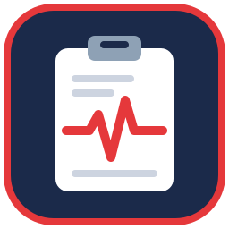

Patient paperwork
StatChart-Sim
Paperwork for patients who don't exist: discharge summaries, medication administration records and end-of-life orders your students will find on scene.
Free browser tools for EMS instructors. Build scenarios, print the paperwork, and run better sims. Nothing to install, nothing to sign up for.
Collections of related tools, each with its own home page.

Paperwork for patients who don't exist: discharge summaries, medication administration records and end-of-life orders your students will find on scene.
EMS Sim Lab is a collection of free, open-source training tools for EMS simulation, built by EMS educators for the wider EMS education community.
Everything these tools produce is fictional and for education and simulation only. It isn't a medical record, medical advice or a clinical decision tool. Review generated content against your program's standards and local protocols before using it in class.